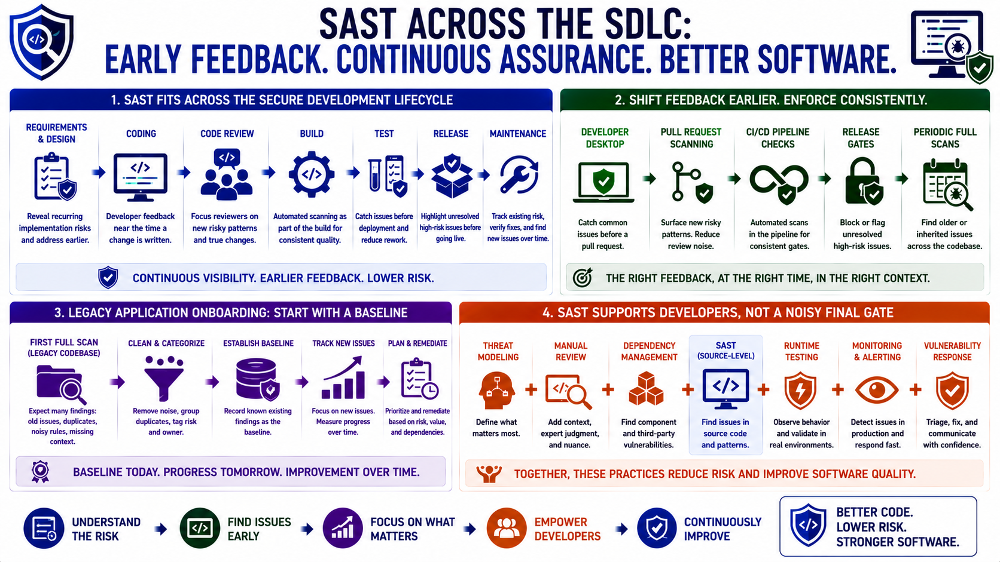

Where SAST Fits in the Secure SDLC
Connecting to LMS... Progress: in progress

Narration
SAST fits across the secure software development lifecycle, from development through maintenance. It can support requirements and design by showing recurring implementation risks that should be addressed earlier. It can support coding by giving developers feedback near the time a change is written. It can support code review, build, test, release, and maintenance by helping teams identify new issues, track existing risk, and verify that fixes remain in place.
The strongest SAST programs shift feedback earlier without turning every finding into a late-stage crisis. Developer desktop checks can catch common issues before a pull request. Pull request scanning can focus reviewers on new risky patterns. CI/CD pipeline checks can provide consistent enforcement. Release gates can highlight unresolved high-risk issues. Periodic full scans can uncover older or inherited problems that did not appear in a single change.
Legacy application onboarding deserves a thoughtful approach. A first scan of a mature codebase may produce many findings, including old issues, duplicates, noisy rules, and patterns that need context. A baseline scan can establish known existing findings so the team can track new issues and plan remediation over time. Without a baseline strategy, SAST can feel like a wall of debt instead of a practical improvement program.
SAST should support developers, not become a noisy final gate. It complements threat modeling, manual review, dependency management, runtime testing, monitoring, and vulnerability response. Threat modeling helps define what matters. Manual review adds context. Dependency scanning sees component risk. Runtime testing observes behavior. SAST contributes source-level signal, and that signal is most useful when it arrives in time to guide engineering decisions.